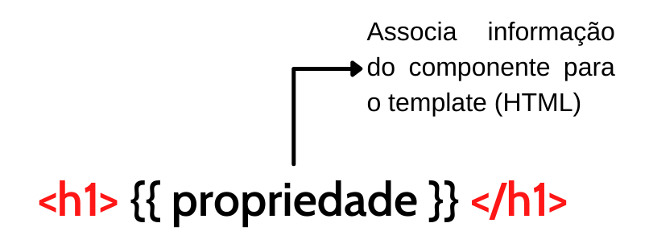
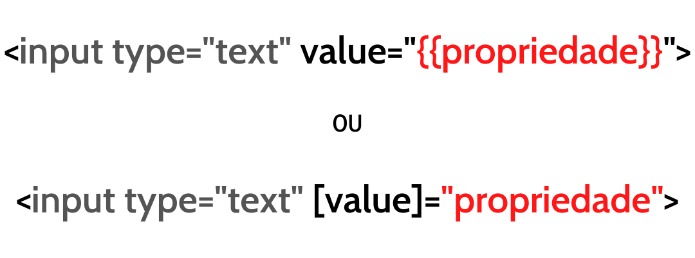
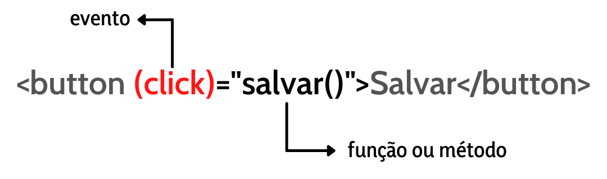

<section id="data-binding">
  <div class="container">

    <h1 class="pt-5">Data Binding</h1>
    <h3>O Data Binding (ou vinculação de dados) é a sincronização de dados entre os componentes do modelo e da view.</h3>

    <div id="dataBinding">
      <mat-tab-group mat-align-tabs="end">
        <mat-tab label="Interpolation">
          <p class="my-5">
            Interpolation ou interpolação em português é o tipo mais comum de binding, ele é utilizado para transportar
            o valor de propriedades e retorno de métodos do componente para o template HTML. Na interpolação utilizamos
            o nome da propriedade ou método dentro de duas chaves, em inglês <i>curly brackets</i>.
          </p>
          <hr>
          
        </mat-tab>

        <mat-tab label="Attribute binding">
          <p class="my-5">
            Com o attribute binding podemos setar o valor de qualquer atributo de um elemento html.<br>
            Podemos também utilizar os colchetes para envolver o atributo do elemento html, desta forma o template irá receber o valor da propridade do componente diretamente no atributo sem a necessidade de utilizar a interpolação.
          </p>
          <hr>
          
        </mat-tab>


        <mat-tab label="Event binding">
          <p class="my-5">
            Neste tipo de binding enviamos valores vindos do template HTML para o componente, este tipo de binding é importantíssimo por ser utilizado para manipular os eventos e interações com o template e enviados para o componente. E como o próprio nome diz, event binding, utilizamos de eventos para que possamos disparar os métodos ou expressões para atualizarmos a model a partir de um elemento Html presente no template.
          </p>
          <hr>
          
        </mat-tab>

        <mat-tab label="Two way binding">
          <p class="my-5">
            Com o two-way databinding temos a sincronização bidirecional, e assim, sempre que o valor for alterado quer seja no componente ou no template ele será sincronizado e atualizado em ambos os lados.
          </p>
          <hr>
          
        </mat-tab>

      </mat-tab-group>
    </div>

  </div>
</section>
